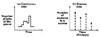
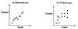
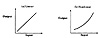
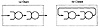
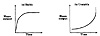

24.3 TERMINOLOGY
There are a number of terms that are commonly used in modeling. To define these terms, an example of simulating CPU scheduling is used in this section. The problem is to study various scheduling techniques for given CPU demand characteristics of jobs. Other components of the system, such as disks and terminals, will be ignored for the moment.
- • State Variables: The variables whose values define the state of the system are called state variables. If a simulation is stopped in the middle, it can be restarted later if and only if values of all state variables are known. In the CPU scheduling simulation, the state variable is the length of the job queue.

FIGURE 24.1 Continuous-time versus discrete-time models.
- • Event: A change in the system state is called an event. In the CPU scheduling simulation, there are three events: arrival of a job, beginning of a new execution, and departure of a job.
- • Continuous-Time and Discrete-Time Models: A model in which the system state is defined at all times is called a continuous-time model. The CPU scheduling model, for example, is a continuous-time model. If the system state is defined only at particular instants in time, the model is called a discrete-time model. As an example, consider a class that meets every Friday. Suppose, in a model, the state of the class is specified by the number of students who attend the class. Notice that the class size can be determined only on Fridays. On other days, the state of the class is not defined. This is therefore an example of a discrete-time model. Figure 24.1 shows these two types of models.
- • Continuous-State and Discrete-State Models: A model is called continuous- or discrete-state model depending upon whether the state variables are continuous or discrete. Recall from Section 10.1 that the continuous variables can take uncountably infinite values. For example, if in a model of the weekly class, state is defined as the time spent by the students on the subject, it would be a continuous-state model. On the other hand, if the state is defined as the number of students, it would be a discrete-state model. In the CPU scheduling model, the state variable—the queue length—can assume only integer values. It is therefore also a discrete-state model, as shown in Figure 24.2. A discrete-state model is also called a discrete-event model. Similarly, a continuous-state model is called a continuous-event model.

FIGURE 24.2 Continuous-state versus discrete-state models.

FIGURE 24.3 Deterministic and probabilistic models.
Notice that continuity of time does not imply continuity of state and vice versa. Thus, examples can be found for all four possible combinations: discrete state/discrete time, discrete state/continuous time, continuous state/discrete time, and continuous state/continuous time models.
- • Deterministic and Probabilistic Models: If the output (results) of a model can be predicted with certainty, it is a deterministic model. A probabilistic model, on the other hand, gives a different result on repetitions for the same set of input parameters. This is shown in Figure 24.3. Figure 24.3b shows the results of a probabilistic model; multiple points along a vertical line represent different output possibilities for a given input. In Figure 24.3a, all repetitions with the same input produce the same output, and hence there is only one point along any vertical line.
- • Static and Dynamic Models: A model in which time is not a variable is called static. If the system state changes with time, the model is dynamic. The CPU scheduling model, for example, is a dynamic model. An example of a static model is the following model of matter-to-energy transformation: E = mc2.
- • Linear and Nonlinear Models: If the output parameters are a linear function of the input parameter, the model is linear; otherwise it is nonlinear, as shown in Figure 24.4.
- • Open and Closed Models: If the input is external to the model and is independent of it, it is called an open model. In a closed model, there is no external input. Figure 24.5 shows two queueing models of a computer system. In Figure 24.5b, the same jobs keep circulating in the model. A job departing the second queue reenters the first queue. This is therefore a closed model. Figure 24.5a shows an open model in which new jobs enter the model.

FIGURE 24.4 Linear and nonlinear models.

FIGURE 24.5 Open and closed models.

FIGURE 24.6 Stable and unstable models.
- • Stable and Unstable Models: If the dynamic behavior of the model settles down to a steady state, that is, independent of time, it is called stable. A model whose behavior is continuously changing is called unstable. This is shown in Figure 24.6.
Computer system models are generally continuous time, discrete state, probabilistic, dynamic, and nonlinear. Some are open; others are closed. In addition, stable as well as unstable models of computer systems are used.
){kind=link}
){kind=link}
)
){kind=link}
){kind=link}
){kind=link}
){kind=link}
){kind=link}
){kind=link}
){kind=link}
){kind=link}
){kind=link}